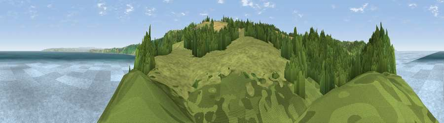

Viewpoint near Clovelly
#6708 in England · top 24% of its area beats it · near ClovellyThe view, rendered

A 360° render of this exact spot computed from the terrain model, tree cover and land cover — summer colours, afternoon light, calibrated against photographs of famous viewpoints. Real trees, hedges and buildings will differ in detail.
The panorama
Grey silhouette: terrain skyline in each direction (720 bearings, Earth curvature and refraction included). Dashed green: skyline with trees (+15 m) and buildings (+8 m) as obstacles. Blue strip: how far the ground is visible on each bearing.
Where the view opens
Wedge length = distance to the farthest visible ground on that bearing (vegetation-aware). Rings at 10, 25 and 50 km.
What fills the view
68% water · 15% woodland · 14% grassland · 2% cropland
Angular shares of the visible panorama (visual magnitude), not map area. Landscape diversity 0.39 (0–1 Shannon).
Key numbers
More beautiful places nearby
The staircase of upgrades: each row has a higher view potential than everything closer. Driving times are estimates from straight-line distance, calibrated against real road routing — check an actual route before setting out.
| Place | Direction | Drive | Score |
|---|---|---|---|
| Viewpoint near Clovelly | SSE · 1 km | ~3 min | 83.6 |
| Viewpoint near Bucks Mills | ESE · 7 km | ~14 min | 84.0 |
| Viewpoint near Woolacombe | NE · 22 km | ~36 min | 84.7 |
| Viewpoint near Combe Martin | NE · 35 km | ~54 min | 86.9 |
| Viewpoint near Crackington Haven | SSW · 36 km | ~55 min | 88.1 |
| Viewpoint near Combe Martin | NE · 36 km | ~55 min | 88.9 |
| Holdstone Hill | NE · 38 km | ~57 min | 90.2 |
| The Knoll | ESE · 128 km | ~152 min | 91.0 |
51.00472, -4.40801 · source: screening · position refined by local search. Computed location — check access rights before visiting.